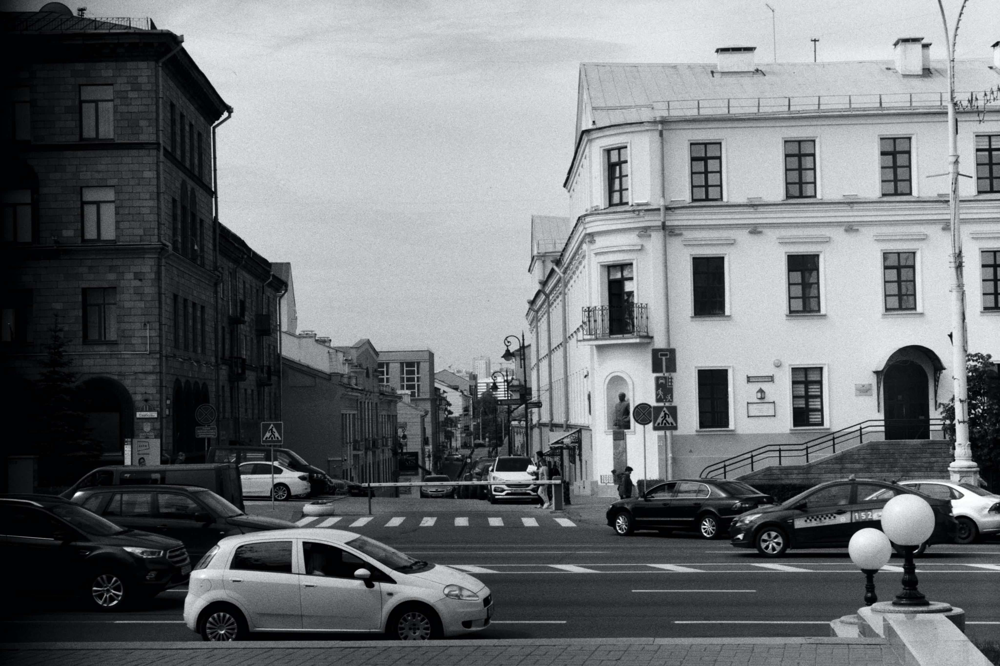

скролл

@@include('tpl/_map-svg.html',{})
30 лет
30 лет независимости Беларуси – это история того, как менялась социальная структура, ценности и люди.
независимой
незави-
симой
После распада СССР Беларусь из советской республики стала независимым государством.
Беларуси
long scroll container long scroll container long scroll container long scroll container long scroll container long scroll container END